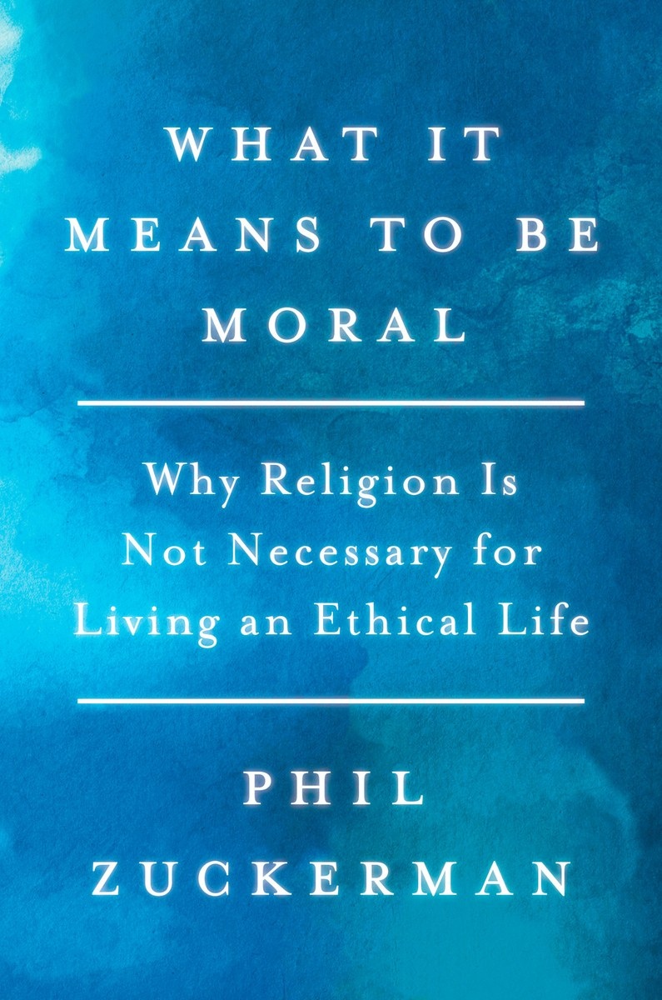
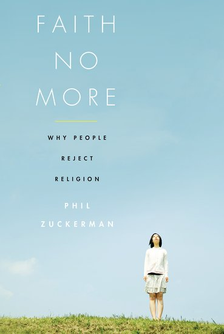
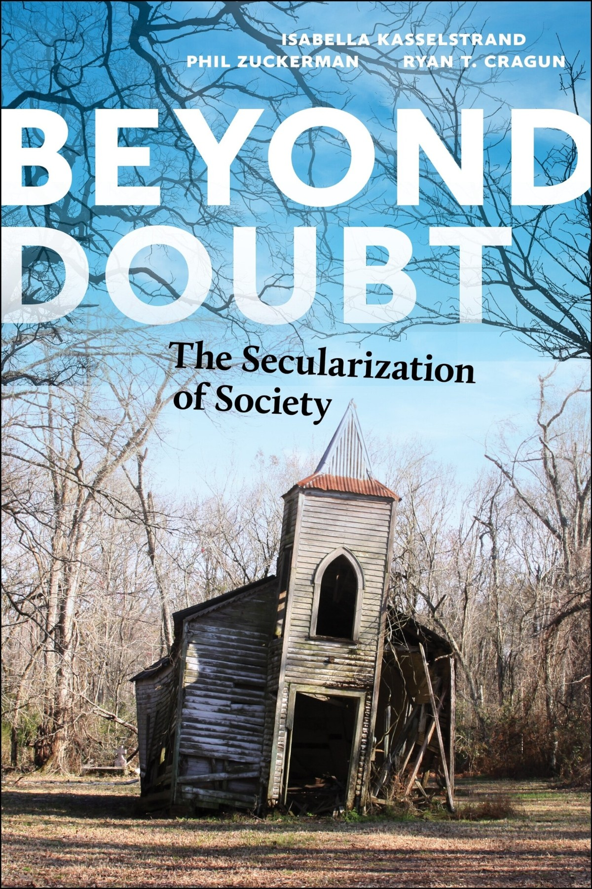
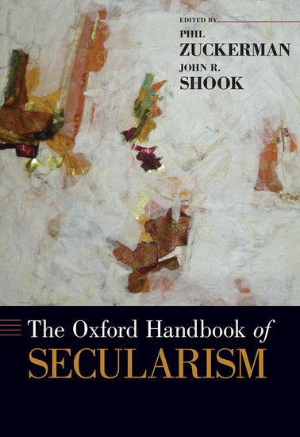
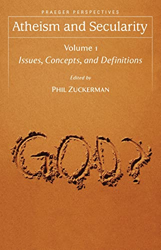

BOOKS / 04
Books
Books
Written, co-written, and edited volumes on secular life, nonreligion, morality, culture, and sociology.
Complete bibliography
Drag the shelf
Drag · scroll · hover · open
01 / Author

Living the Secular Life
Penguin · 2015
02 / Author

Society Without God
NYU Press · 2020
03 / Author

What It Means to Be Moral
Counterpoint · 2020
04 / Author

Sociology, Unplugged
Routledge · 2026
05 / Author

Faith No More
Oxford University Press · 2011
06 / Co-author
The Nonreligious
Oxford University Press · 2016
07 / Co-author

Beyond Doubt
NYU Press · 2023
08 / Co-editor

The Oxford Handbook of Secularism
Oxford University Press · 2017
09 / Editor
Religion: Beyond Religion
Macmillan · 2016
10 / Editor

Atheism and Secularity
Praeger · 2010
11 / Editor
Du Bois on Religion
Bloomsbury · 2025
12 / Editor

The Social Theory of W.E.B. Du Bois
SAGE · 2004
13 / Author

Invitation to the Sociology of Religion
Routledge · 2003
14 / Author
Strife in the Sanctuary
AltaMira Press · 1999